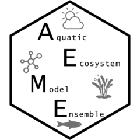

Run a single what-if model scenario from a path alone
Source:R/run_model_test.R
run_model_test.RdGeneric driver for quickly testing different parameters, nml/yaml/par
settings, inflow/outflow concentrations, or initial conditions against an
existing GLM-AED, GOTM-WET, Simstrat-AED or Simstrat-AED2 configuration
directory, without needing an aeme object. Dispatches to each model's
thin path-based wrapper functions (e.g. set_glm_param()/
set_glm_init()/set_glm_inflows()/set_glm_outflows()/
run_glm_aed()/read_glm_output() for model = "glm_aed") so scenario
code can be written once and pointed at any supported model.
Arguments
- model
character; one of
"glm_aed","gotm_wet","simstrat_aed","simstrat_aed2".- path
filepath; directory containing the existing model configuration to edit and run (as already written by
build_aeme()).- param_overrides
named list of parameter/value pairs, forwarded to the model's
set_*_param()wrapper, e.g.list(Kw = 0.5)for GLM-AED orlist(`time.dt` = 1800)for GOTM-WET. Empty list (default) leaves parameters unchanged.- init
named list forwarded to the model's
set_*_init()wrapper, e.g.list(temp = seq(20, 10, length.out = 10), wq_init = list(NIT_amm = 0.5)). Empty list (default) leaves initial conditions unchanged.- inflow_args
named list forwarded to the model's
set_*_inflows()wrapper; must includedata, a named list of inflow data.frames (seeadd_inflow()).NULL(default) leaves inflows unchanged.- outflow_args
named list forwarded to the model's
set_*_outflows()wrapper; must includedata, a named list of outflow data.frames (seeadd_outflows()), plus any further arguments the model requires (e.g.heights_wdr, andsurface_elevfor Simstrat).NULL(default) leaves outflows unchanged.- tgt_vars
character vector of output variables to read back (passed as
vars_simto the model'sread_*_output()wrapper, and also used to decide which derived variables – e.g."HYD_thmcln"– to compute viaadd_deriv_output()).NULL(default) reads every variable the reader returns by default, but adds no derived variables – request them explicitly by name to get them.- verbose
logical; passed through to the model's
run_*()wrapper.- safe
logical; if
TRUE(default), a failed edit or model run is caught and reported withmessage()instead of stopping – useful when looping over many scenarios and one bad combination shouldn't abort the rest. SetFALSEto let errors propagate normally.
Value
A list of the requested output variables (as returned by the
model's read_*_output() wrapper, with derived variables added via
add_deriv_output()), or NULL if safe = TRUE and the edit/run/read
failed.
Details
Each *_args list is applied via do.call() against the corresponding
thin wrapper, with path supplied automatically as its first argument –
so the names inside each list must match that wrapper's own arguments.
inflow_args/outflow_args are the exception: their data.frame list
argument is always named data (regardless of the underlying wrapper's
own naming – list_inf/inf_list/inf), and any extra arguments the
underlying outflow writer requires (e.g. Simstrat's heights_wdr/
surface_elev) are passed alongside it by name.